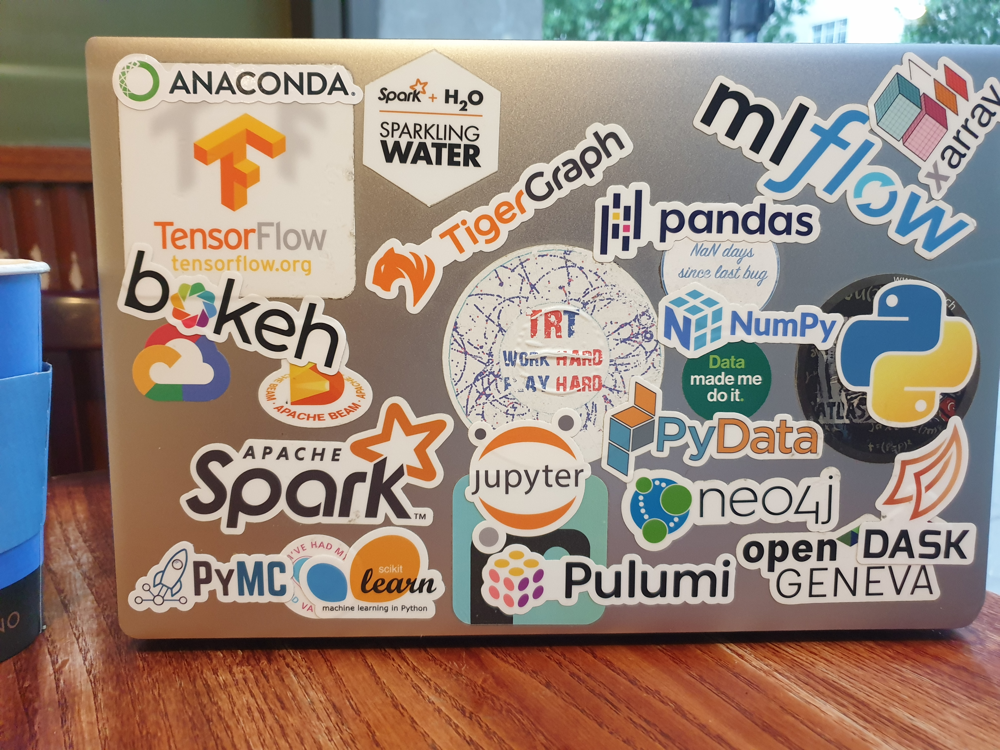

About me#
I am a Full Stack Data Scientist, and a former particle physicist.
It’s not unluckily to find me around at Data Science related Meetups and events in London.
What I do#
{kind=link}
I currently work in The Lab team at Virgin Media O2, an Innovation Lab cross-functional team that explores new technologies to drive innovation across the business.
In my role I leverage the data asset of the company to solve challenging problems, increase competitiveness with ML models and predicting analytics, mitigate risks and optimize processes,and working horizontally across the business.
New ideas and approaches are channeled in proof of concept solutions that eventually can be scaled to production and/or extended in scope.
Data Science Interests#
{kind=link}
Probably the back of my “battlefield” laptop speaks for itself.
I use and experiment all kind of frameworks, tools and libraries. As a lifelong Linux user, I give a preference to open source products, but in general I take whatever fits best for my purpose.
- Cloud Services
I used Azure for some projects, but I’ve been more on GCP recently
- Cluster Computing
I worked a lot with PySpark and I love it! I like Dask as well, and experimenting recently with Polars and CuDF.
- ML
Usually scikit-learn fits the bill, I like LightBGM for tabular supervised learning, otherwise Tensorflow ecosystem (but PyTorch 2.0 is arriving, maybe a reason to switch?). I also like Bayesian models (pyMC) and such. Working in telecommunication sector I’ve been looking at Graph ML models and Geospatial analysis, a two great passions of mine. Plus of course all other big DS topics that you need to know to have fun on Kaggle!
- MLOps:
To be honest, once you know the principles (testing, CI/CD, pipelines, monitoring, etc…) any tool integrated in cloud services are usually good enough. I like MLFlow, and not only because is coming from the Spark ecosystem.
- Visualization:
I was a power user of Matplotlib/Seaborn, but now I’m totally a plotly converted! If you try it, you won’t go back. Still, I find the HoloViz ecosystem projects quite intriguing, even beyond data visualization. For Geo-related stuff I hope kepler will continue to evolve as it is an interesting approach.
- Other:
GAN, synthetic data, differential privacy, explainable AI, and many more…
Certifications#
{kind=link}
{kind=link}
In general I don’t believe in any form of “proof” of knowledge, be it an academic degree or a professional certification.
But since my company has been generously sponsoring (a.k.a. paying) for them, well, why not! And I didn’t regret it, I learned a lot preparing for them!
They are not a proof of your knowledge, but surely they are a mean to improve your knowledge! (although there are many other free resources to do the same).
Other interests#
I probably won’t post much on the many other interests I have, with few exceptions, for example if it’s an excuse to do a little DS/tech project (as the live Book Reading Logbook plot below). Also I’ll have some math posts, as I want to experiment with latex, interactive/executable code, and I have many notes to be used as a source.

And last but not least because I’m a puzzle addicted!
That’s my badge on Project Euler, an incredible site of challenging computational problems with a math-ish spin. Brute force won’t get you very far, you need some (actually a lot of) ingenuity to simplify the problem enough to be able to compute the solution in a finite time.
CV#
If you want a hard-copy CV, send me an email with a request
A rough timeline#
Below is a rough timeline of what I’ve been up to over the past several years, inspired again by Chris Holdgraf implementation with Sphinx
2023: This blog went live
Revamped the idea of having a web site, experimenting with static and interactive documentation frameworks like Sphinx, MyST, JupyterBook and slowly adding contents.
2019: Joined The Lab at Virgin Media O2,
Full stack Data Scientist working across the business to foster innovation and bring in new technologies. Some area I worked on:
ML model for customer credit risk
Insurance claim propensity predictions
Network performance impact on customer value and churn
2018: Science to Data Science Fellow
Five-week intensive project with Astrazeneca on a proof-of-concept prototype of a Knowledge Graph database realized with Neo4J targeting use cases as drug repositioning
2006-2019: Research Scientist at CERN
Worked as a member of the ATLAS international collaboration at the Large Hadron Collider (LHC).
Over the years I covered many roles on data quality, monitoring, curation, acquisition, distribution, detector operation, data and detector simulation, as well of course statistical analysis of the data.
2005: Ph.D in Physics,
Gradated at the Rockefeller University, NY with a thesis on “Search For Diboson Production With Artificial Neural Network Selection”
What I Am Reading#
If you are curious about which books I’ve been
reading and at which page I currently am, here it is!
(a sort of embedded-dashboard if you’re into buzzy terminology)
This plot is updated nightly with an Azure Function. In this post I explain the design of my Book Reading Log and how I have implemented it.